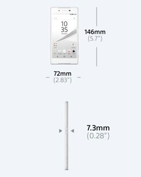

Câmera REVOLUCIONÁRIA e design inovador: conheça o smartphone com CÂMERA de 23MP, disparo ultra rápido, até 2 dias de bateria e design à prova d'água*.
Cores disponíveis
O Xperia Z5 proporciona um autofoco de 0,03 segundos incrivelmente rápido e preciso, combinando duas tecnologias diferentes
Saiba maisChegue cinco vezes mais perto do objeto sem perder a qualidade, graças à potência dos sensores e das lentes e à exclusiva tecnologia Clear Image Zoom das câmeras Sony.
Saiba mais
"Conferimos o foco do Xperia Z5 e ele é incrivelmente rápido, tanto quando
usamos o foco por toque quanto com o autofoco."
Leia a avaliação completa da Pocket-lint
"Câmeras rápidas e de alta resolução, além de uma tela detalhada, deixam
a Sony pronta para encarar a Apple."
Leia a avaliação completa do Xperia Z5
Não perca a magia da noite graças ao Xperia Z5. Equipado com a próxima geração de sensores de imagem da Sony, você pode capturar belas cenas noturnas exatamente como as vê. Sem os ruídos ou desfoques usuais.
Confira as fotos tiradas com o Xperia
Com uma estrutura de metal leve, desenho suave e simplificado e parte traseira em vidro fosco, o Xperia Z5 é ao mesmo tempo bonito e confortável de segurar
Chuvas inesperadas acontecem, assim como quedas na pia e copos derramados. O Xperia Z5 tem o design à prova d'água* líder da Sony e uma classificação IP68. Porque um pouco de água não deveria acabar com o seu dia.
O botão liga/desliga do Xperia Z5 apresenta nosso novo sensor de impressão digital integrado. O botão foi intuitivamente colocado na lateral do celular para que você possa pegar e desbloquear com segurança em um único movimento.
O Xperia Z5 oferece a você até dois dias** de bateria no modo STAMINA. Ouça mais músicas,converse por dias e fique fora de casa por mais tempo sem se preocupar.
Com suporte a DNC e áudio de alta resolução, você pode ouvir a música da forma que ela foi imaginada e bloquear todo o resto.
Saiba mais sobre o somTudo o que você vê fica mais vívido nessa tela Full HD com as tecnologias incorporadas das TVs BRAVIA da Sony.
Saiba mais sobre nossas telasCom o PS4™ Remote Play, você acessa seu console PS4 por meio de seu smartphone e continua o jogo de qualquer lugar.
Saiba mais sobre o Remote Play|
Câmera de 23 MP com autofoco híbrido (0,03 s) Mais informações sobre a câmera |
|
|
Proteção contra água e poeira IP68* Mais informações sobre o dispositivo à prova d'água |
|
|
Duração da bateria de até dois dias** Mais informações sobre a bateria |
|
|
Processador octa-core Qualcomm® Snapdragon™ 810 de 64 bit Mais informações sobre a bateria |
|
|
Áudio de alta resolução com cancelamento de ruído digital Mais informações sobre som |
|  |